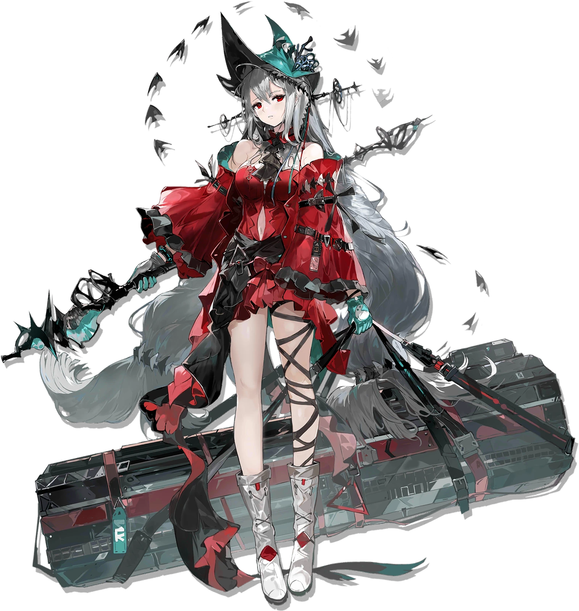

深海猎人
斯卡蒂来自阿戈尔。在成为罗德岛干员之前，她是一名深海猎人——以巨剑与肉体对抗海嗣，把来自海洋的灾祸挡在陆地之外。
她的战斗经验长达十三年，但更早的履历在档案中是一片空白。巨剑的打造方式难以解释，她的身体数据也远超常规；对医疗部门来说，她是一个无法被轻易归类的特例。
STORY / THE TIDE REMEMBERS
她来自海面之下。那里有她的同胞、她的战场，也有她不愿再提起的失去。
斯卡蒂来自阿戈尔。在成为罗德岛干员之前，她是一名深海猎人——以巨剑与肉体对抗海嗣，把来自海洋的灾祸挡在陆地之外。
她的战斗经验长达十三年，但更早的履历在档案中是一片空白。巨剑的打造方式难以解释，她的身体数据也远超常规；对医疗部门来说，她是一个无法被轻易归类的特例。
灾难之后，她离开阿戈尔，以赏金猎人的身份在陆地上行走。她很少提起过去，也很少在一个地方停留太久。那些与她亲近的人，似乎总会遇到不幸。
“我的过去可是很糟糕的。”这不是一句自嘲，而是一种预先划清界限的提醒。
她接受罗德岛的雇佣，承担单兵任务。战场上，她很少与队友配合，更多时候独自解决目标，让队友收拾残局。普通干员因此对她敬而远之。
但她并不是无法合作。她只是太清楚，自己的力量会吸引什么样的危险。她把“离我远一点”说得很冷，却把“我来保护你”做得认真。
盐风城的事件让海嗣、深海教会与“伊莎玛拉”的名字浮出水面。她被迫再次面对自己的血脉与身份，也再次与歌蕾蒂娅、幽灵鲨站在同一边。
她曾以为自己是被留下的最后一个深海猎人。后来她发现，海面之下还有同路的人，而海面之上，也有人愿意等她回来。
在愚人号的航程中，深海猎人的命运进一步交汇。她不再只是那个独自挥剑的猎人，也开始学着相信同伴，学着把后背交给别人。
“我到底是个深海猎人。”这句话既是对身份的确认，也是她重新选择与同胞站在一起的开始。
如果她选择拥抱海洋，会变成什么样子？浊心斯卡蒂是另一条时间线，也是她内心裂缝的倒影。她不是斯卡蒂的终点，而是一个提醒：一个人可以被潮水带走，也可以选择循光回来。
02 / RELATIONS
即使她总把自己放在队伍之外，仍有一些名字，会让她停下脚步。
旧日同僚。她记得幽灵鲨真正的职责，也记得要博士帮帮她。即使对方失去了记忆、穿上了修女服，她仍然认得出那个熟悉的影子。
同为深海猎人。两人之间有过分歧，也有无法割断的血脉与责任。歌蕾蒂娅是那个会在关键时刻把她拉回来的人。
她一开始要求你离她两米以上；后来，她说：“这样我不就只能老老实实保护你了吗。”这不是依赖，而是她第一次允许自己拥有一个想要保护的人。
敌人，也是她必须理解的镜子。“你们就是我们。你的血是我们的血。”海嗣让她恐惧，也让她不得不追问：自己究竟是谁。
03 / CONTRADICTION
斯卡蒂的魅力不在于“强”，而在于强大与脆弱同时成立。
她把疏远当作保护。越在意的人，越要推远；越想留下，越要假装随时可以离开。
她渴望同胞与家，却又害怕再次经历失去。罗德岛给她的不是一个答案，而是一段可以慢慢走的路。
她的力量让她能独自解决大多数问题，也让她习惯了不求助。真正的成长，也许是学会说一句“帮我”。

ALTER / CORRUPTING HEART
如果潮水吞没了最后一束光，她会不会也变成海的一部分？异格不是另一个角色，而是同一个灵魂在极端假设下的回声。她仍然记得歌，只是那首歌已经不再属于陆地。
“你以前觉得我们彻底离开海水就没法生存？不是的。”浊心斯卡蒂 / 交谈 1
THE TIDE REMEMBERS